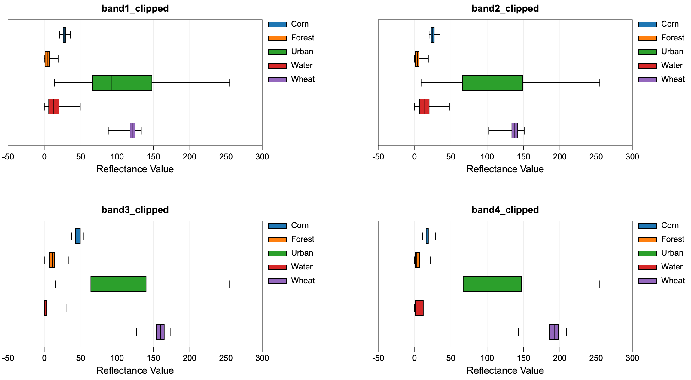

Image Processing Tools → Classification
- EvaluateTrainingSites
- ImageSegmentation
- KMeansClustering
- MinDistClassification
- ModifiedKMeansClustering
- ParallelepipedClassification
EvaluateTrainingSites
Note this tool is part of a WhiteboxTools extension toolset. Please contact Whitebox Geospatial Inc. for information about purchasing a license activation key (https://www.whiteboxgeo.com).
This tool performs an evaluation of the reflectance properties of multi-spectral image dataset for a
group of digitized class polygons. This is often viewed as the first step in a supervised classification
procedure, such as those performed using the MinDistClassification or ParallelepipedClassification
tools. The analysis is based on a series of one or more input images (--inputs) and an input polygon
vector file (--polys). The user must also specify the attribute name (--field), within the attribute
table, containing the class ID associated with each feature in input the polygon vector. A single class
may be designated by multiple polygon features in the test site polygon vector. Note that the
input polygon file is generally created by digitizing training areas of exemplar reflectance properties for each
class type. The input polygon vector should be in the same coordinate system as the input multi-spectral images.
The input images must represent a multi-spectral data set made up of individual bands.
Do not input colour composite images. Lastly, the user must specify the name of the output HTML file.
This file will contain a series of box-and-whisker plots, one
for each band in the multi-spectral data set, that visualize the distribution of each class in the
associated bands. This can be helpful in determining the overlap between spectral properties for the
classes, which may be useful if further class or test site refinement is necessary. For a subsequent
supervised classification to be successful, each class should not overlap significantly with the other
classes in at least one of the input bands. If this is not the case, the user may need to refine
the class system.

See Also: MinDistClassification, ParallelepipedClassification
Parameters:
| Flag | Description |
|---|---|
| -i, --inputs | Name of the input band images |
| -p, --polys | Name of the input training site polygons shapefile |
| -f, --field | Name of the attribute containing class name data |
| -o, --output | Name of the output report file (*.html) |
Python function:
wbt.evaluate_training_sites(
inputs,
polys,
field,
output,
callback=default_callback
)
Command-line Interface:
>> ./whitebox_tools -r=EvaluateTrainingSites ^
--inputs="band1.tif;band2.tif;band3.tif;band4.tif" ^
--polys=training_sites.shp --field=CLASS ^
-o=class_properties.html
Source code is unavailable due to proprietary license.
Author: Whitebox Geospatial Inc. (c)
Created: 20/03/2021
Last Modified: 20/03/2021
ImageSegmentation
Note this tool is part of a WhiteboxTools extension toolset. Please contact Whitebox Geospatial Inc. for information about purchasing a license activation key (https://www.whiteboxgeo.com).
This tool is used to segment a mult-spectral image data set, or multi-dimensional data stack. The
algorithm is based on region-growing operations. Each of the input images are transformed into
standard scores prior to analysis. The total multi-dimensional
distance between each pixel and its eight neighbours is measured, which then serves as a priority
value for selecting potential seed pixels for the region-growing operations, with pixels exhibited the least
difference with their neighbours more likely to serve as seeds. The region-growing operations
initiate at seed pixels and grows outwards, connecting neighbouring pixels that have a multi-dimensional
distance from the seed cell that is less than a threshold value. Thus, the region-growing operations attempt
to identify contiguous, relatively homogeneous objects. The algorithm stratifies potential seed pixels into
bands, based on their total difference with their eight neighbours. The user may control the size and number
of these bands using the --threshold and --steps parameters respectively. Increasing the magnitude of the
threshold parameter will result in fewer mapped objects and vice versa. All pixels that are not assigned to an
object after the seeding-based region-growing operations are then clumped simply based on contiguity.
It is commonly the case that there will be a large number of very small-sized objects identified using this
approach. The user may optionally specify that objects that are less than a minimum area (expressed in pixels)
be eliminated from the final output raster. The --min_area parameter must be an integer between 1 and 8. In
cleaning small objects from the output, the pixels belonging to these smaller features are assigned to the
most homogeneous neighbouring object.
The input rasters (--inputs) may be bands of satellite imagery, or any other attribute, such as measures
of texture, elevation, or other topographic derivatives, such as slope. If satellite imagery is used
as inputs, it can be beneficial to pre-process the data with an edge-preserving low-pass filter, such as
the BilateralFilter and EdgePreservingMeanFilter tools.
See Also: BilateralFilter, EdgePreservingMeanFilter
Parameters:
| Flag | Description |
|---|---|
| -i, --inputs | Names of the input band images |
| -o, --output | Name of the output raster file |
| --threshold | Distance threshold, in z-scores |
| --steps | Number of steps |
| --min_area | Minimum object area, in grid cells (1-8) |
Python function:
wbt.image_segmentation(
inputs,
output,
threshold=0.5,
steps=10,
min_area=4,
callback=default_callback
)
Command-line Interface:
>> ./whitebox_tools -r=ImageSegmentation ^
-i='band1.tif; band2.tif; band3.tif; band4.tif' -o=segmented.tif ^
--threshold=4.0 --steps=10 --min_area=4
Source code is unavailable due to proprietary license.
Author: Whitebox Geospatial Inc. (c)
Created: 28/05/2021
Last Modified: 28/05/2021
KMeansClustering
This tool can be used to perform a k-means clustering operation on two or more input
images (--inputs), typically several bands of multi-spectral satellite imagery. The
tool creates two outputs, including the classified image (--output and a classification
HTML report (--out_html). The user must specify the number of class (--classes), which should be
known a priori, and the strategy for initializing class clusters (--initialize). The initilization
strategies include "diagonal" (clusters are initially located randomly along the multi-dimensional diagonal
of spectral space) and "random" (clusters are initially located randomly throughout spectral space).
The algorithm will continue updating cluster center locations with each iteration of the process until
either the user-specified maximum number of iterations (--max_iterations) is reached, or until a
stability criteria (--class_change) is achieved. The stability criteria is the percent of the total
number of pixels in the image that are changed among the class values between consecutive iterations.
Lastly, the user must specify the minimum allowable number of pixels in a cluster (--min_class_size).
Note, each of the input images must have the same number of rows and columns and the same spatial extent because the analysis is performed on a pixel-by-pixel basis. NoData values in any of the input images will result in the removal of the corresponding pixel from the analysis.
See Also: ModifiedKMeansClustering
Parameters:
| Flag | Description |
|---|---|
| -i, --inputs | Input raster files |
| -o, --output | Output raster file |
| --out_html | Output HTML report file |
| --classes | Number of classes |
| --max_iterations | Maximum number of iterations |
| --class_change | Minimum percent of cells changed between iterations before completion |
| --initialize | How to initialize cluster centres? |
| --min_class_size | Minimum class size, in pixels |
Python function:
wbt.k_means_clustering(
inputs,
output,
classes,
out_html=None,
max_iterations=10,
class_change=2.0,
initialize="diagonal",
min_class_size=10,
callback=default_callback
)
Command-line Interface:
>>./whitebox_tools -r=KMeansClustering -v ^
--wd='/path/to/data/' -i='image1.tif;image2.tif;image3.tif' ^
-o=output.tif --out_html=report.html --classes=15 ^
--max_iterations=25 --class_change=1.5 --initialize='random' ^
--min_class_size=500
Author: Dr. John Lindsay
Created: 27/12/2017
Last Modified: 24/02/2019
MinDistClassification
Note this tool is part of a WhiteboxTools extension toolset. Please contact Whitebox Geospatial Inc. for information about purchasing a license activation key (https://www.whiteboxgeo.com).
This tool performs a supervised minimum-distance classification using training site polygons (--polys) and
multi-spectral images (--inputs). This classification method uses the mean vectors for each class and
calculates the Euclidean distance from each unknown pixel to the class mean vector. Unclassed pixels are
then assigned to the nearest class mean. A threshold distance (--threshold), expressed in number of z-scores,
may optionally be used and pixels whose multi-spectral distance is greather than this threshold will not be
assigned a class in the output
image (--output). When a threshold distance is unspecified, all pixels will be assigned to a class.
Like all supervised classification methods, this technique relies heavily on proper selection of training data. Training sites are exemplar areas of known and representative land cover type. The algorithm determines the spectral signature of the pixels within each training area, and uses this information to define the mean vector of each class. It is preferable that training sites are based on either field-collected data or fine-resolution reference imagery. In selecting training sites, care should be taken to ensure that they cover the full range of variability within each class. Otherwise the classification accuracy will be impacted. If possible, multiple training sites should be selected for each class. It is also advisable to avoid areas near the edges of land-cover patches, where mixed pixels may impact the purity of training site reflectance values.
After selecting training sites, the reflectance values of each land-cover type can be assessed using the EvaluateTrainingSites tool. In particular, the distribution of reflectance values should ideally be non-overlapping in at least one band of the multi-spectral data set.
See Also: EvaluateTrainingSites, ParallelepipedClassification
Parameters:
| Flag | Description |
|---|---|
| -i, --inputs | Names of the input band images |
| -p, --polys | Name of the input training site polygons shapefile |
| -f, --field | Name of the attribute containing class name data |
| -o, --output | Name of the output raster file |
| --threshold | Distance threshold, in z-scores; blank for none |
Python function:
wbt.min_dist_classification(
inputs,
polys,
field,
output,
threshold=None,
callback=default_callback
)
Command-line Interface:
>> ./whitebox_tools -r=MinDistClassification ^
-i='band1.tif; band2.tif; band3.tif; band4.tif' ^
-p=training_sites.shp -f='LAND_COVER' -o=classified.tif ^
--threshold=4.0
Source code is unavailable due to proprietary license.
Author: Whitebox Geospatial Inc. (c)
Created: 22/03/2021
Last Modified: 22/03/2021
ModifiedKMeansClustering
This modified k-means algorithm is similar to that described by Mather and Koch (2011). The main difference between the traditional k-means and this technique is that the user does not need to specify the desired number of classes/clusters prior to running the tool. Instead, the algorithm initializes with a very liberal overestimate of the number of classes and then merges classes that have cluster centres that are separated by less than a user-defined threshold. The main difference between this algorithm and the ISODATA technique is that clusters can not be broken apart into two smaller clusters.
Reference:
Mather, P. M., & Koch, M. (2011). Computer processing of remotely-sensed images: an introduction. John Wiley & Sons.
See Also: KMeansClustering
Parameters:
| Flag | Description |
|---|---|
| -i, --inputs | Input raster files |
| -o, --output | Output raster file |
| --out_html | Output HTML report file |
| --start_clusters | Initial number of clusters |
| --merge_dist | Cluster merger distance |
| --max_iterations | Maximum number of iterations |
| --class_change | Minimum percent of cells changed between iterations before completion |
Python function:
wbt.modified_k_means_clustering(
inputs,
output,
out_html=None,
start_clusters=1000,
merge_dist=None,
max_iterations=10,
class_change=2.0,
callback=default_callback
)
Command-line Interface:
>>./whitebox_tools -r=ModifiedKMeansClustering -v ^
--wd='/path/to/data/' -i='image1.tif;image2.tif;image3.tif' ^
-o=output.tif --out_html=report.html --start_clusters=100 ^
--merge_dist=30.0 --max_iterations=25 --class_change=1.5
Author: Dr. John Lindsay
Created: 30/12/2017
Last Modified: 24/02/2019
ParallelepipedClassification
Note this tool is part of a WhiteboxTools extension toolset. Please contact Whitebox Geospatial Inc. for information about purchasing a license activation key (https://www.whiteboxgeo.com).
This tool performs a supervised parallelepiped classification
using training site polygons (--polys) and multi-spectral images (--inputs). This classification method
uses the minimum and maximum reflectance values for each class within the training data to characterize a set
of parallelepipeds, i.e. multi-dimensional geometric shapes.
The algorithm then assigns each unknown pixel in the image data set to the first class for which the pixel's
spectral vector is contained within the corresponding class parallelepiped. Pixels with spectral vectors that
are not contained within any class parallelepiped will not be assigned a class in the output image.
Like all supervised classification methods, this technique relies heavily on proper selection of training data. Training sites are exemplar areas of known and representative land cover type. The algorithm determines the spectral signature of the pixels within each training area, and uses this information to define the mean vector of each class. It is preferable that training sites are based on either field-collected data or fine-resolution reference imagery. In selecting training sites, care should be taken to ensure that they cover the full range of variability within each class. Otherwise the classification accuracy will be impacted. If possible, multiple training sites should be selected for each class. It is also advisable to avoid areas near the edges of land-cover patches, where mixed pixels may impact the purity of training site reflectance values.
After selecting training sites, the reflectance values of each land-cover type can be assessed using the EvaluateTrainingSites tool. In particular, the distribution of reflectance values should ideally be non-overlapping in at least one band of the multi-spectral data set.
See Also: EvaluateTrainingSites, MinDistClassification
Parameters:
| Flag | Description |
|---|---|
| -i, --inputs | Name of the input band images |
| -p, --polys | Name of the input training site polygons shapefile |
| -f, --field | Name of the attribute containing class name data |
| -o, --output | Name of the output raster file |
Python function:
wbt.parallelepiped_classification(
inputs,
polys,
field,
output,
callback=default_callback
)
Command-line Interface:
>> ./whitebox_tools -r=ParallelepipedClassification ^
-i='band1.tif; band2.tif; band3.tif; band4.tif' ^
-p=training_sites.shp -f='LAND_COVER' -o=classified.tif
Source code is unavailable due to proprietary license.
Author: Whitebox Geospatial Inc. (c)
Created: 21/03/2021
Last Modified: 21/03/2021